10 Extracting Citation Data from Law Humanities Scholarship Using LLMs and a Specialized Gold Standard Dataset
Overview
{.unnumbered}
This chapter details a significant detour undertaken to generate the specific data requisite for addressing broader research questions in legal history and humanities scholarship. The core necessity lies in constructing comprehensive citation graphs. Such graphs prove invaluable within the history of science and intellectual history more generally, offering a powerful means to uncover patterns and relationships inherent in knowledge production. Through them, one can trace influences and measure the reception of published ideas. A clear application involves, for instance, tracking the most cited authors over time, thereby illuminating shifts in scholarly focus and impact. An interactive web application, accessible via the original presentation slides, vividly demonstrates this capability for publications such as the Journal of Law and Society within a defined period.
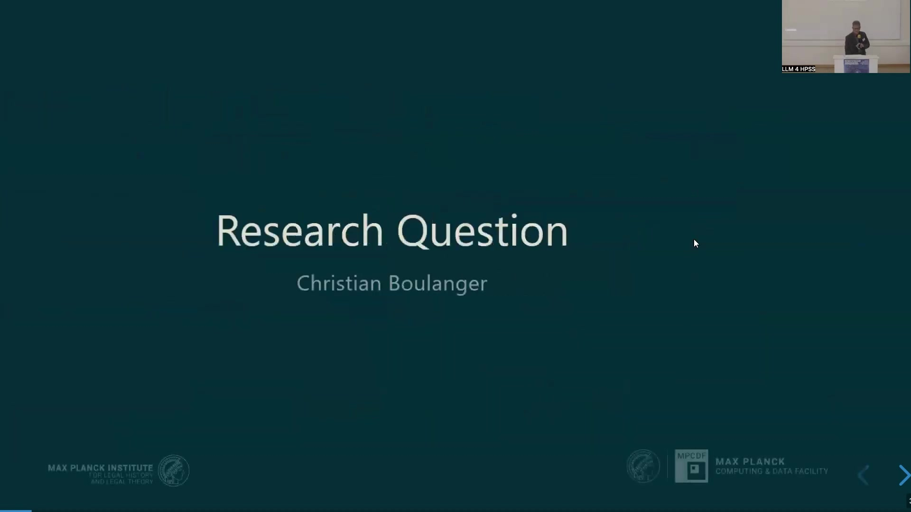
10.1 The Utility of Citation Graphs in Intellectual History
Citation graphs serve as a fundamental tool for exploring the intricate web of scholarly communication. They enable researchers to map connections between institutions, authors, works, and publication venues. An institution is affiliated with an author; an author, in turn, creates a work. Works themselves cite other works and are published in specific venues. This interconnected structure allows for a nuanced analysis of knowledge dissemination.
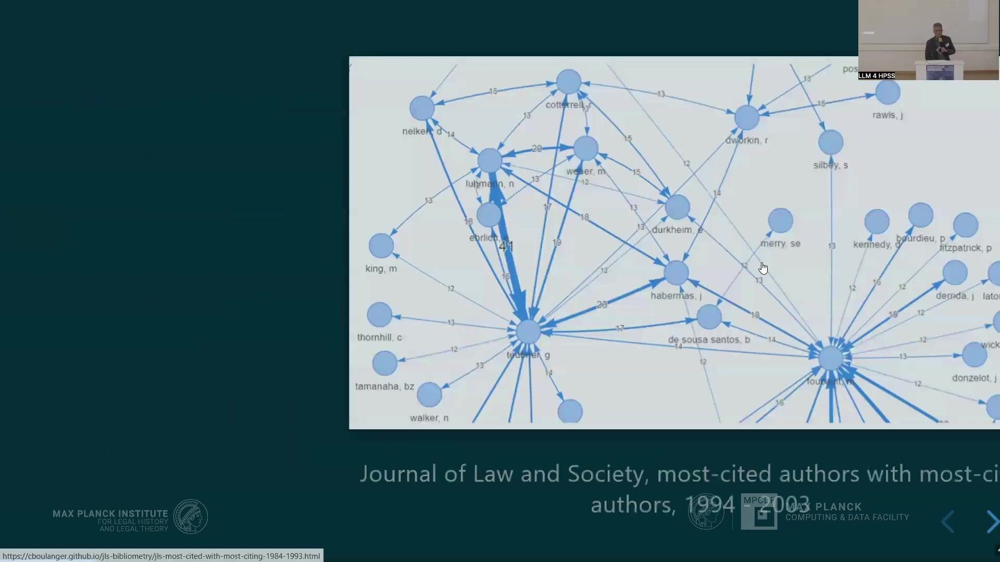
Key applications of citation graphs include:
Discovering latent patterns and relationships within the process of knowledge production.
Reconstructing intellectual influences and measuring the reception of scholarly contributions.
Observing longitudinal changes, such as shifts in the prominence of certain authors over decades.
However, the creation of reliable citation graphs for historical social sciences and humanities (SSH) presents considerable challenges, primarily stemming from data availability and quality.
10.2 Problem 1: Deficient Coverage by Bibliometric Datasources
A primary obstacle encountered when studying historical SSH scholarship is the profoundly inadequate coverage offered by existing bibliometric databases. For the specific domain of legal history and related humanities fields, these databases often prove unusable as they lack the necessary depth and breadth of data.
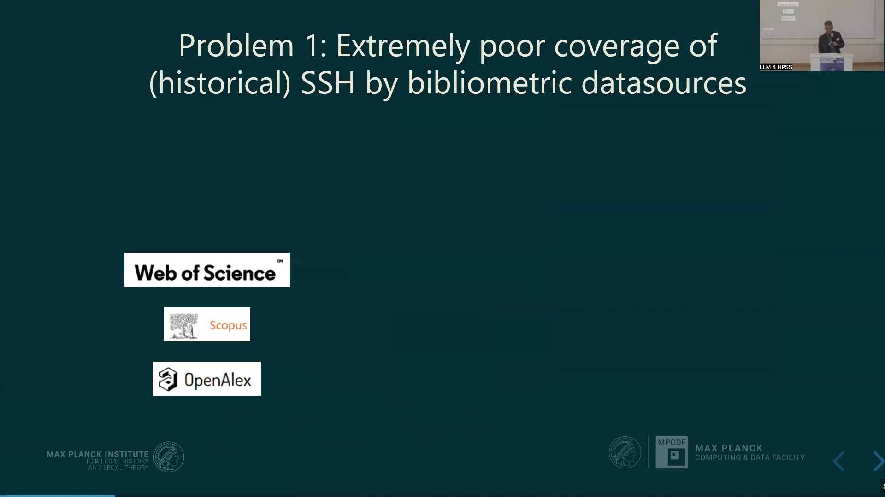
Prominent datasources like Web of Science, Scopus, and OpenAlex, whilst useful in other domains, exhibit severe limitations for this research area. Web of Science and Scopus, beyond their data deficiencies, are exceedingly expensive and operate under highly restrictive licences. This dependency on costly, closed systems is undesirable. OpenAlex offers a more accessible, open alternative; nevertheless, it too falls short in providing the specific historical data required for in-depth SSH analysis.
An illustrative example is the Zeitschrift für Rechtssoziologie, a German journal for law and society established in 1980. Analysis of its coverage in these databases reveals a stark reality: data availability improves somewhat after the 2000s, but prior to this period, information is virtually non-existent.
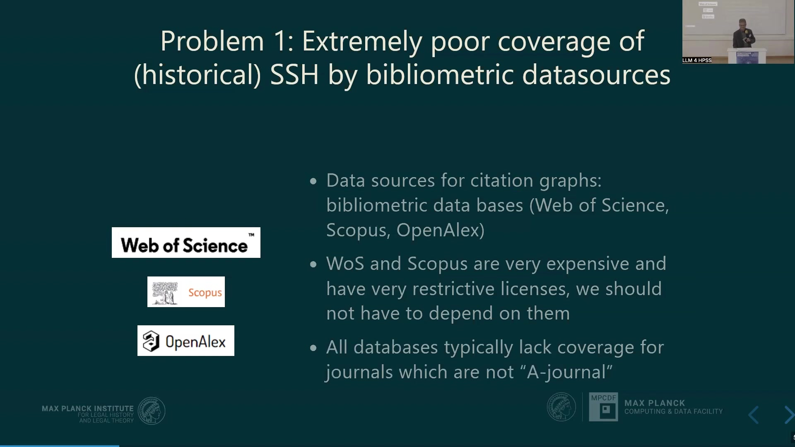
10.2.1 Underlying Reasons for Poor Coverage
Several factors contribute to this poor coverage of historical SSH scholarship in mainstream bibliometric databases.

Primarily, a lack of commercial interest distinguishes humanities scholarship from STEM fields, medicine, and economics, which receive far greater attention from database compilers. Consequently, these databases tend to prioritise journals with high impact factors, a metric often irrelevant for research focused on intellectual history rather than immediate scientific evaluation. Furthermore, a significant characteristic of the literature pertinent to this research is its extensive use of footnotes, which introduces another layer of complexity.
10.3 Problem 2: The Intricacy of Humanities Footnotes
Humanities scholarship frequently employs complex footnotes that extend beyond simple citations. These footnotes often contain substantial commentary, discussions, and elaborations, creating what can be described as “footnotes from hell” from a data extraction perspective. This dense, often unstructured information is embedded within considerable textual noise, making automated parsing a formidable task.

Traditional tools for reference extraction, often relying on methods like conditional random fields and other machine learning techniques, struggle to perform adequately with such messy data. Annotating these footnotes manually is an exceedingly laborious process. Even when such annotations are painstakingly created, existing tools often fail to deliver satisfactory results. This naturally leads to the question of whether newer technologies, specifically Large Language Models (LLMs), can offer a more effective solution.
10.4 The Potential of Large Language Models
The advent of LLMs presents a promising avenue for tackling the challenges of extracting citation data from complex humanities texts.
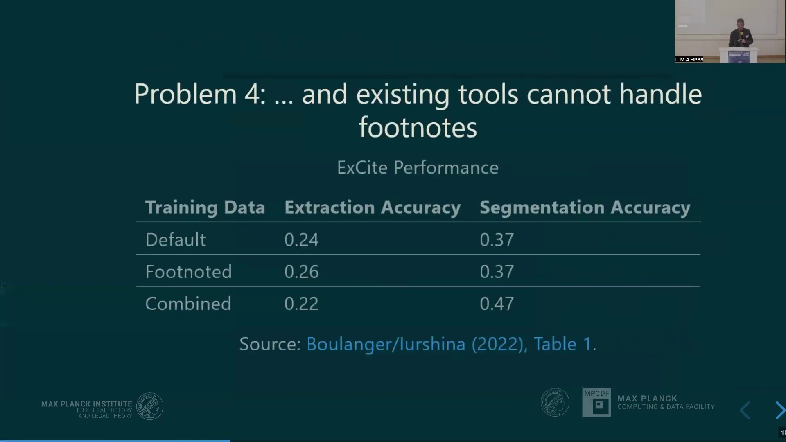
Initial ad hoc experiments, even with earlier models such as text-davinci-003 in 2022, demonstrated the considerable power of LLMs to extract references from convoluted textual data. Newer models promise even greater capabilities, and the emergence of Vision Language Models (VLMs) opens up the possibility of processing PDF documents directly. Various methods, including prompt engineering, Retrieval Augmented Generation (RAG), and fine-tuning, are currently under investigation to harness these capabilities effectively.
10.4.1 The Imperative of Trust and Validation
Despite the potential of LLMs, a critical question arises: can we trust the results they produce? It is a fundamental principle that no analysis should proceed without robust validation of the underlying data. Attempting to solve problems without adequate validation data is a perilous exercise. The history of AI tool adoption, even in fields like law, includes cautionary tales of reliance on unverified outputs, sometimes with serious consequences.
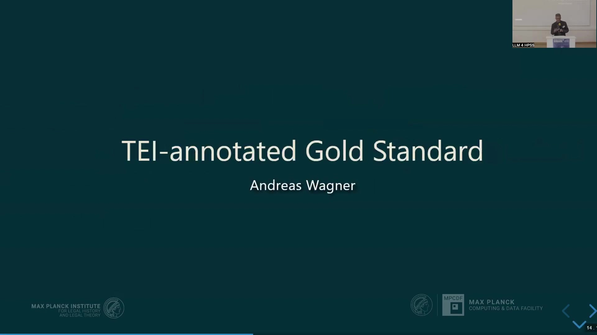
Therefore, a robust testing and evaluation solution becomes paramount. Such a solution necessitates several key components:

A high-quality Gold Standard dataset for benchmarking.
A flexible framework capable of adapting to the rapidly evolving technological landscape of LLMs.
Solid testing and evaluation algorithms to produce comparable metrics across different approaches.
10.5 Crafting a TEI-Annotated Gold Standard
To address the need for reliable evaluation data, efforts focused on compiling a dataset suitable for both training and evaluation, encoded using Text Encoding Initiative (TEI) XML.
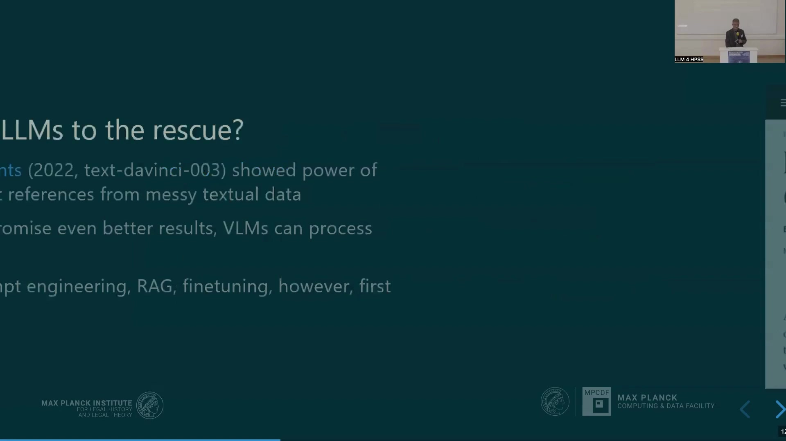
The choice of TEI XML, whilst perhaps not conventional in all machine learning circles, is deeply rooted in humanities and digital editorial practices, where it stands as a crucial and widely adopted standard. Several compelling reasons underpin this decision. TEI XML offers a well-established, comprehensively specified standard that surpasses the capabilities of purely bibliographical formats like CSL or BibTeX. It can encode a much wider range of textual phenomena, extending beyond mere reference management to include contextual information. This contextual encoding is vital for tasks such as classifying citation intention.
Moreover, adopting TEI allows for tapping into existing text collections, editions, and corpora, as many digital humanities projects publish their source data in this format, sometimes including detailed reference encodings. These existing resources can then serve as valuable testbeds for assessing the generalisation and robustness of new extraction mechanisms. Despite some conceptual and technical challenges inherent in any standard, TEI provides a strong foundation.
The process of establishing this dataset involves several stages of encoding. For instance, a footnote is first identified within a PDF. The reference string within that footnote is then segmented from non-referential commentary. Finally, this string is parsed into a structured data format.
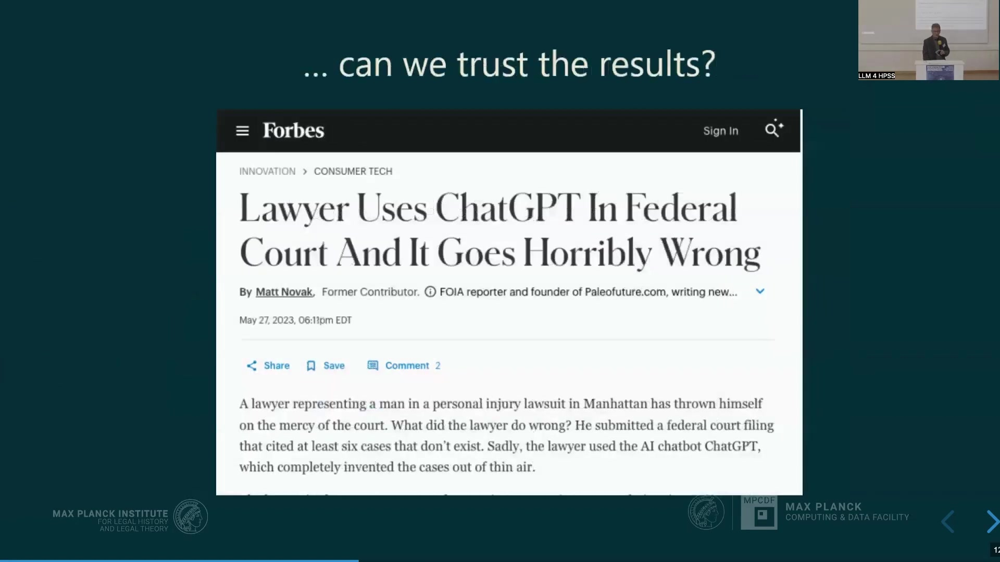
The strategy for building this dataset evolved. Initially, the focus was on data more directly relevant to the primary research questions. However, to leverage the capabilities of VLMs, the approach shifted towards incorporating PDFs directly. This change necessitated a move to open-access journals to ensure the entire dataset—from PDF to parsed reference—could be published. Currently, the dataset encompasses over 1,100 footnotes from 20 articles, spanning multiple languages and a broad time frame, which are anticipated to yield more than 1,500 individual reference instances. Encoding each occurrence is important, as the context of a citation is as significant as the citation itself.
10.5.1 Advantages of TEI XML Encoding and Tooling
A significant benefit of employing an interoperable standard like TEI XML is the wealth of existing tooling.
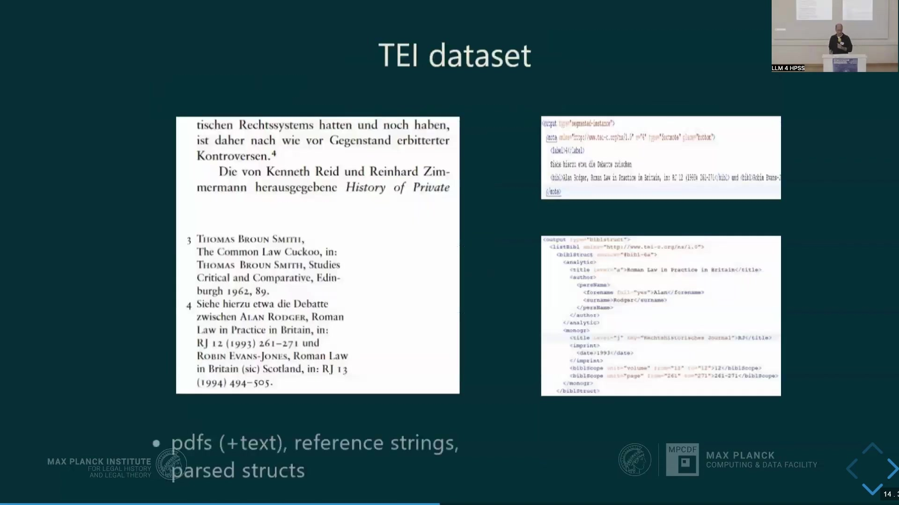
For information extraction, Grobid stands out as a prominent tool for processing references and other scholarly information. Crucially, Grobid utilises TEI XML for its own training and evaluation processes. Adopting the same data format facilitates direct performance comparisons between bespoke tools and Grobid. It also enables the use of Grobid’s training data for new mechanisms and, conversely, allows for contributing the newly created dataset back to the Grobid team and the wider community. This synergy enhances the ecosystem for scholarly information extraction. However, this raises a fundamental question: what precisely constitutes ‘performance’ in this context?
10.6 Llamore: A Python Package for Reference Extraction and Evaluation
To address these challenges and provide a framework for systematic evaluation, researchers developed Llamore: Large Language Models for Reference Extraction.
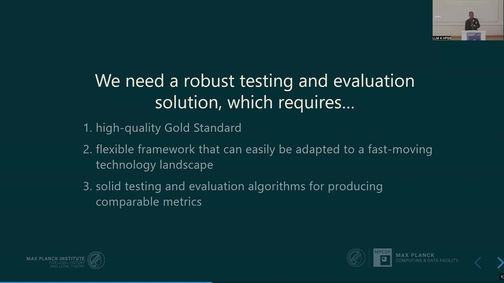
Llamore is a lightweight Python package designed with two primary functions. Firstly, it accepts raw text or PDF files as input and returns extracted references, which can then be exported as TEI-formatted XML files. Secondly, if gold standard references are available, Llamore can evaluate the extraction performance.
Two main objectives guided Llamore’s development:
Lightweight Design: Llamore itself does not contain any models. Instead, it functions as an interface to a model of the user’s choice.
Broad Compatibility: The package ensures compatibility with both open-source and proprietary closed LLMs and VLMs.
10.6.1 Operational Workflow of Llamore
Llamore is available on PyPI and can be installed via pip. For the extraction component, users define an extractor based on their chosen model. The OpenAI-compatible extractor, for example, provides broad compatibility with many open model serving frameworks (e.g., Ollama, vLLM) that offer OpenAI-compliant API endpoints. Users then provide a PDF or text string to the extractor, receive extracted references, and can export these to an XML file.
For evaluation, users import an F1 class and provide it with both the gold standard references and the extracted references to compute performance metrics.
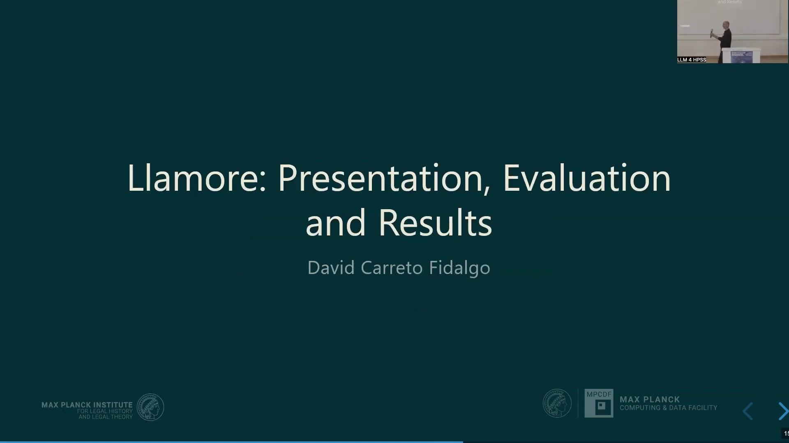
10.7 Evaluation Methodology: Quantifying Performance
A cornerstone of Llamore is its robust evaluation methodology, centred on the F1 score, a well-established metric for comparing structured data.
10.7.1 Comparing Individual References
Precision and recall form the basis of the F1 score. In this context:
Precision = Number of Matches / Number of Predicted Elements
Recall = Number of Matches / Number of Gold Elements
A ‘match’ occurs when an element (e.g., analytic title, monographic title, author surname, publication date) in the extracted reference corresponds to an element in the gold reference. The F1 score is then the harmonic mean of precision and recall. An F1 score of 1 signifies a perfect extraction, whilst a score of 0 indicates no matches.

10.7.2 Aligning Sets of References
Beyond comparing individual references, a significant challenge lies in aligning the set of extracted references with the set of gold references. When a PDF is processed, the tool returns multiple references; it is then necessary to determine which extracted reference corresponds to which gold reference for accurate comparison.
Llamore addresses this by framing it as an unbalanced assignment problem. It computes the F1 score for every possible pairing of an extracted reference with a gold reference, constructing a cost matrix. Using solvers (such as the one available in SciPy), Llamore then seeks to maximise the total F1 score across all references whilst ensuring each reference is uniquely assigned.
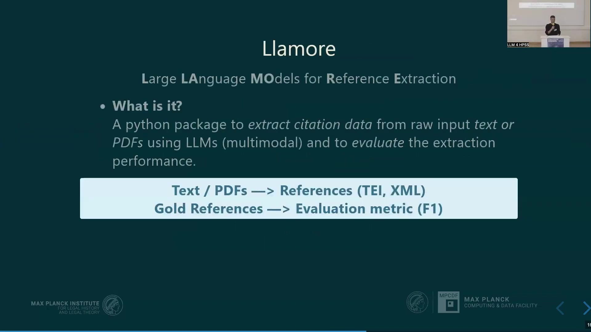
Once assignments are made, the F1 scores for individual references can be aggregated (e.g., through macro-averaging). This approach penalises missing references (those present in the gold standard but not extracted) and hallucinated references (those extracted but not present in the gold standard) by assigning them an F1 score of zero. This methodology bears similarity to recently published work on reference evaluation.
10.8 Performance Assessment: Does Llamore Work?
To assess Llamore’s efficacy, evaluations were conducted on two distinct datasets.
10.8.1 Performance on the PLOS 1000 Dataset
The first benchmark involved the PLOS 1000 dataset, comprising 1,000 PDFs from the biomedical domain. On this dataset, Llamore (using Gemini 1.5 Flash) performed comparably to Grobid. Grobid has been trained on portions of this type of journal article.
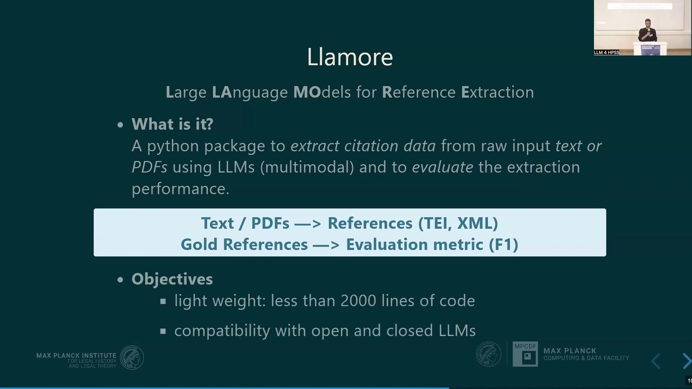
However, considering resource efficiency, Grobid remains superior, as the computational demand for the LLM-based approach (Gemini) is orders of magnitude larger.
10.8.2 Performance on the Custom Humanities Dataset
The second evaluation utilised the newly curated TEI-annotated gold standard dataset, specifically designed to reflect the complexities of humanities scholarship. On this dataset, Grobid struggled significantly to extract references accurately. In contrast, the LLM-based approach employed by Llamore demonstrated markedly better performance.
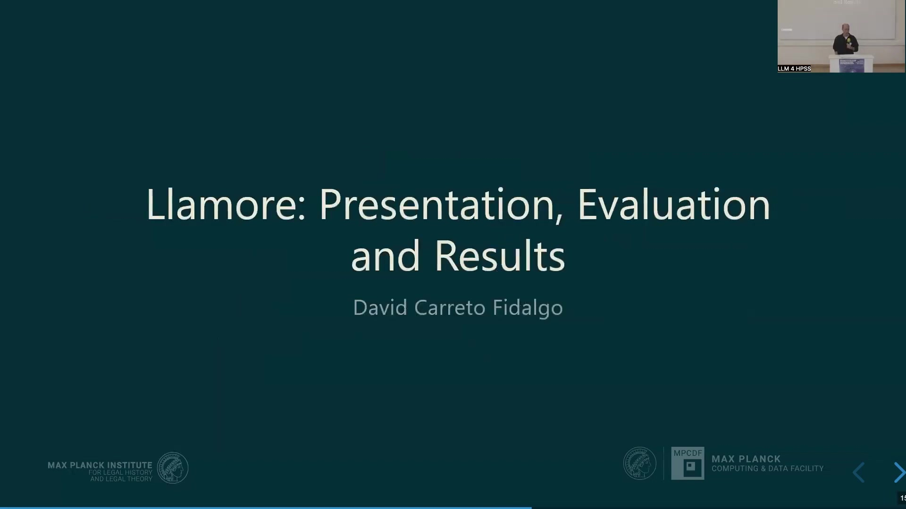
These results underscore the potential of LLMs, when coupled with a robust evaluation framework like Llamore and a specialized gold standard, to tackle the challenging task of citation extraction in fields poorly served by existing tools.
10.9 Conclusion
The journey to create high-quality citation data for law and humanities scholarship has necessitated the development of new methodologies and tools. The inadequacy of existing bibliometric databases for historical SSH research, compounded by the inherent complexity of humanities-style footnotes, presents a substantial barrier.
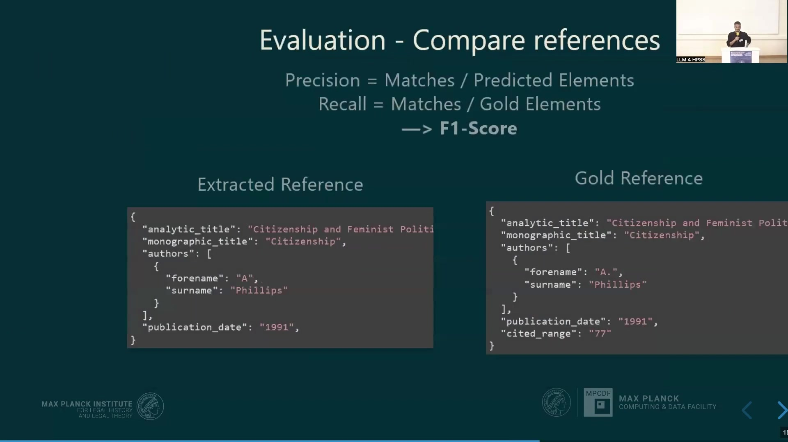
Large Language Models offer a promising avenue to overcome these obstacles. However, their application requires rigorous validation. The creation of a TEI-annotated gold standard dataset provides the necessary foundation for such validation. The Llamore Python package, designed for both reference extraction and performance evaluation, enables systematic assessment and comparison of different approaches.
Whilst LLM-based methods can be computationally intensive, their superior performance on complex, domain-specific material—as demonstrated with the custom humanities dataset—highlights their value. This work paves the way for generating the rich citation graphs needed to explore the dynamics of knowledge production in legal history and the broader humanities.